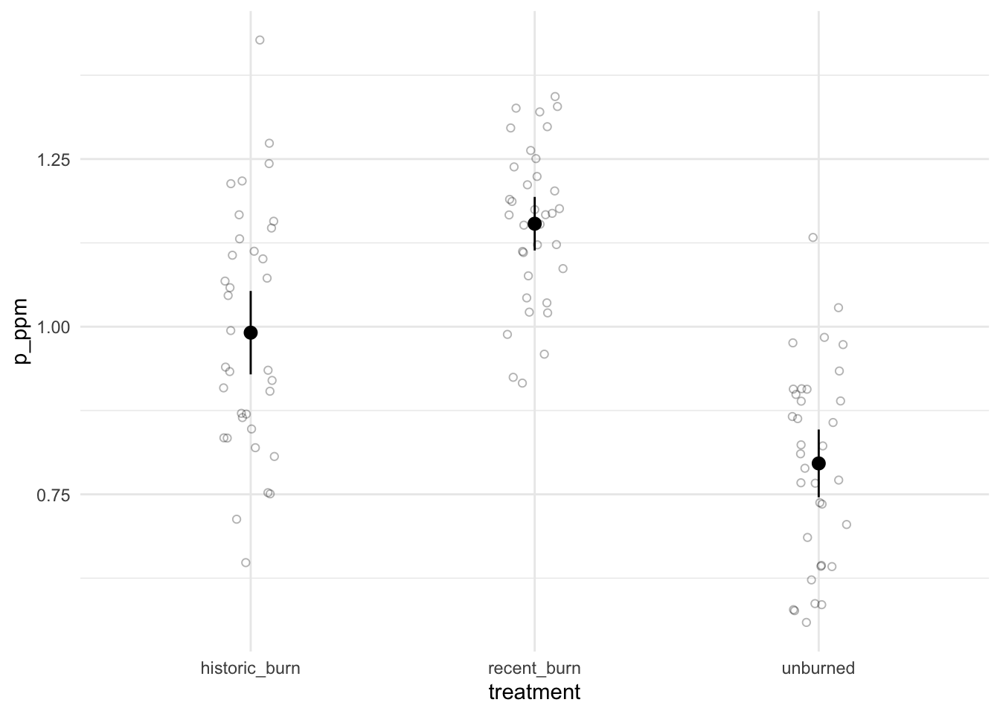

Due on Wednesday May 8 (Week 6) at 11:59 PM
Description
In this midterm, you will demonstrate your ability to synthesize lecture concepts and technical skills from workshop. At this point, you have the conceptual ideas you need (for example, what is the appropriate test to use if you want to compare groups?) and the technical skills you need (for example, summarizing data, visualizing data). You also have the investigative skills you need (for example, reading for tasks, googling!). You will use all these components to complete the midterm.
This midterm is open note, open internet, open everything; feel free to also talk with classmates and friends.
Problem 1. Test choice, assumptions, and communication (21 points)
Skills you will demonstrate
In this problem, you will demonstrate your ability to come up with an “analysis plan” by articulating what hypotheses you are testing, and what tests are appropriate for those hypotheses. You will also demonstrate your ability to interpret code output and synthesize the statistics in writing to ground the stats in biology for a scientific audience.
Description
You’re the manager of a reserve that burned in a major wildfire a year ago. Plants have started to grow back in some areas, but things still don’t look quite right. You wonder if the soil phosphorus content (expressed in parts per million, ppm) has something to do with how plants are (or are not) returning to burned areas. You want to compare soil phosphorus content in areas in the reserve with different burn histories: recently burned (within the last 2 years), historically burned (within the last 10 years), and unburned (not burned in the last 10 years).
Components
a. Hypotheses (2 points)
State your hypothesis in statistical terms. (1-2 sentences)
b. Tests (2 points)
What kind of parametric statistical test could you use to test the null hypothesis? Justify your use of this test by describing why it is appropriate for the response and predictor variables you have. (1-2 sentences)
c. Assumptions (3 points)
What are the assumptions you would have to meet to use the test? (1-2 sentences)
d. Alternate routes (2 points)
If your data did not meet the assumptions of this test, what other test(s) could you do? Justify your potential use of this test. (1-2 sentences)
e. Exporatory data visualization (2 points)
After coming up with your analysis plan (in parts a-d), you collect samples from all three areas of the reserve (n = 35 for each sample). To explore your data, you make the following graph:
Describe whether or not there could be a difference in phosphorus soil content between burned and unburned treatments. Use components from the figure to justify your description. (1-2 sentences)
f. Normality (2 points)
You then make a QQ plot and test for normality.
This is your QQ plot:
And this is your output of a test for normality:
Shapiro-Wilk normality test
data: historic_burn
W = 0.97773, p-value = 0.684
Shapiro-Wilk normality test
data: recent_burn
W = 0.96896, p-value = 0.4152
Shapiro-Wilk normality test
data: unburned
W = 0.96529, p-value = 0.3273Using the figure and the results from the test you ran, describe whether your variable is normally distributed enough. If you have evidence to suggest your variable is not normally distributed, describe why you could continue using a parametric test. (1-2 sentences)
g. Variances (2 points)
You then calculate the variances for each group and run a test for equal variances.
This is the output for your calculation of variances:
# A tibble: 3 × 2
treatment var
<chr> <dbl>
1 historic_burn 0.0328
2 recent_burn 0.0135
3 unburned 0.0216And the output of your variance test:
Warning in leveneTest.default(y = y, group = group, ...): group coerced to
factor.Levene's Test for Homogeneity of Variance (center = median)
Df F value Pr(>F)
group 2 4.1822 0.01796 *
102
---
Signif. codes: 0 '***' 0.001 '**' 0.01 '*' 0.05 '.' 0.1 ' ' 1Using your calculated variances and output of the test you ran, describe whether your variances are equal enough. (1-2 sentences)
h. Test and communication (6 points)
You run your statistical test. Following your test, you also decide to do a post-hoc analysis and calculate an effect size.
This is your test output:
Df Sum Sq Mean Sq F value Pr(>F)
treatment 2 2.242 1.1210 49.51 9.42e-16 ***
Residuals 102 2.310 0.0226
---
Signif. codes: 0 '***' 0.001 '**' 0.01 '*' 0.05 '.' 0.1 ' ' 1This is your post-hoc output:
Tukey multiple comparisons of means
95% family-wise confidence level
Fit: aov(formula = p_ppm ~ treatment, data = soil_data)
$treatment
diff lwr upr p adj
recent_burn-historic_burn 0.1624826 0.07692837 0.2480369 5.0e-05
unburned-historic_burn -0.1949605 -0.28051474 -0.1094062 1.2e-06
unburned-recent_burn -0.3574431 -0.44299738 -0.2718888 0.0e+00And this is your effect size output:
For one-way between subjects designs, partial eta squared is equivalent
to eta squared. Returning eta squared.# Effect Size for ANOVA
Parameter | Eta2 | 95% CI
-------------------------------
treatment | 0.49 | [0.38, 1.00]
- One-sided CIs: upper bound fixed at [1.00].You want to report your results to the other managers at the reserve. In 2-3 sentences, describe your results.
Problem 2. Reproducing an analysis (41 points)
Skills you will demonstrate
In environmental studies, open research means that researchers make their data and/or their code available for anyone to see. This means that anyone should be able to reproduce the analysis, even if they are not on the research team. In this problem, you will demonstrate your ability to read a paper to understand the context for a research study and its statistical analysis. You will then demonstrate your ability to take a data set and analyze it, using the researchers’ original analysis as a guide.
When reproducing someone else’s analysis, you should be able to get the same exact results (for example: test statistics, summary statistics) that they do. When doing this problem, double check your work against the text/figures in the paper. Did you get it right?
Description
You will reproduce the analysis in Beheshti, K. M., K. Wasson, C. Angelini, B. R. Silliman, and B. B. Hughes. 2021. Long-term study reveals top-down effect of crabs on a California salt marsh. Ecosphere 12(8):e03703. 10.1002/ecs2.3703.
Read all parts of the paper before starting this problem.
You will specifically recreate the components in this passage:
In trial (i) with pickleweed root only, there was less pickleweed root biomass in treatments (MT = 0.21, SDT = 0.07) than controls (MC = 0.34, SDC = 0.05), indicating crab consumption of roots (Fig. 6, Welch’s two-sample t-test; t(20.5) = 5.55, P < 0.0001). In trial (ii) with algae only, there was less algal biomass in treatments (MT = 0.12, SDT = 0.11) than controls (MC = 0.33, SDC = 0.03), indicating crab consumption of algae (Fig. 6, Welch’s two-sample t-test; t(13.05) = 6.098, P < 0.0001). Lastly, in trial (iii) with both algae and pickleweed offered simultaneously, treatments had less biomass than controls for both pickleweed roots (MT = 0.24, SDT = 0.07, and MC = 0.32, SDC = 0.03) and algae (MT = 0.08, SDT = 0.15, and MC = 0.28, SDC = 0.10), indicating that crabs consume pickleweed roots as well as algae when both are offered (Fig. 6, Welch’s two-sample t-test; pickleweed roots, t(11.03) = 3.00, P = 0.012; algae t(14.40) = 3.20, P = 0.006).
Getting the data
Once you have read the paper, find the open research statement at the end of the paper. Navigate to the database using the link that is provided. Download the data into your midterm directory. To understand the data structure, read the README, which is a description of the data.
Components
a. Feeding trials (2 points)
In 1-2 sentences, explain why the authors conducted feeding trials and how they analyzed the data from their feeding trials.
b. Comparisons (2 points)
In 1-2 sentences, explain the difference(s) between the three feeding trials.
c. Response variable (2 points)
In 1-2 sentences, explain the biological interpretation of the difference in mean dry weight between control and treatments in the feeding trials. For example, if mean dry weight is lower in the treatment than the control, what would be your biological explanation for why that is the case?
d. Reading in the data (2 points)
Load in the data and do any cleaning/wrangling steps you need.
e. Summary statistics (8 points)
Calculate the mean and standard deviation of:
- pickleweed root biomass in control and treatment for trial (i)
- algal biomass in control and treatment for trial (ii)
- both pickleweed and algal biomass in control and treatment for trial (iii)
Display your results.
f. Welch’s t-tests (10 points)
Conduct Welch’s t-tests comparing biomasses between control and treatment in:
- trial (i)
- trial (ii)
- trial (iii)
Display the outputs for all 3 tests.
g. Making a new figure (11 points)
Plots like Figure 6 show means and whiskers (in this case, standard error), but do not show the data structure and can mask important information about the spread of the observations in each sample.
Make a new figure for figure 6 that displays the mean and standard error (as in figure 6) but shows the underlying data. Finalize it.
For full credit:
- take out the gridlines
- jitter the underlying data horizontally but not vertically
- give each type a different color that is different from the
ggplot()default color
- make the underlying data more transparent than the dot and whisker
- make the dot and whisker larger than the underlying data
- take out the legend
h. Caption (4 points)
Write a caption for your figure in part i. Include a data citation, if appropriate.
Problem 3. Cleaning, wrangling, and visualization (19 points)
Skills you will demonstrate
Figures are built on data; however, to make a figure, you need to understand the data structure and any cleaning, wrangling, or summarizing steps to create it. In this problem, you will demonstrate your ability to clean, wrangle, and/or summarize a data set to create a figure, using a final figure as a guide.
Description
In this problem, you will use the arc_weather dataset from lterdatasampler to recreate this figure.

The caption for the figure is as follows:
Figure 1. Toolik Field Station is above freezing between May and September. Blue lines represent mean monthly air temperature for a given year (1988 - 2018), with lines becoming lighter with more recent years. Horizontal black dashed line at 0 °C for reference. Data source: Horst A, Brun J (2023). lterdatasampler: Educational Dataset Examples from the Long Term Ecological Research Program. R package version 0.1.1, https://CRAN.R-project.org/package=lterdatasampler.
Approach:
You will need to clean/wrangle the data before making this figure. You should end up with mean monthly air temperature, calculated for each month in each year. Your final data frame could look something like this:

Tip
Note that there are multiple ways of approaching the cleaning/wrangling steps and the visualization steps. There is no one “correct” approach, as long as you get to the right output.
Components
a. Initial cleaning, wrangling, and summarizing (6 points)
Write your code to create arc_weather_clean, a clean and wrangled data frame. Annotate each line of code.
Once you’re done, display the first 10 rows of your data frame using head(arc_weather_clean, 10) in your script.
Problem prep - do this on scratch paper (not in your document)
In words (not code), write the list of functions/arguments that would get you to the final data frame. For example:
- Create a data frame called
arc_weather_clean. Start witharc_weatherdata frame, and then…
- [insert next step here], and then…
- [insert next step here], and then…
- [insert next step here], and then…
and so on. Use these steps to guide the code you write. Code not working? Rewrite your steps on scratch paper and try again.
b. Make the figure (13 points)
Write your code to recreate the figure. Display the output.
Problem prep - do this on scratch paper (not in your document)
Make a list of the arguments in the aes() call and any geom_() calls you will need to use. What are the x- and y-axes, and what do the colors represent?
Problem 4. Personal data (18 points)
Skills you will demonstrate
Up until this point, we’ve created figures to represent data. In this problem, you will create a table to represent data from your personal data project. You will demonstrate your understanding of data summarizing (for example, calculating a mean, counting observations), installing/loading packages, and your ability to apply packages/functions to your own use.
Before doing this problem, update your spreadsheet with your new observations.
Components
a. Data summarizing (2 points)
In 1-2 sentences, describe how you could summarize your data to compare your response variable between a categorical predictor variable of your choosing. For example, are you counting observations and comparing counts between groups? Are you taking the mean and comparing means between groups?
b. Visualization (6 points)
Using the summary you described in part a, create a visualization of your data comparing your summarized response variable between some categorical predictor variable. If you are calculating a mean or median, show the underlying data in addition to your summary. Display the output.
Note
See From Data to Viz for new ideas for visualization.
c. Caption (4 points)
Write a caption for your figure.
d. Table presentation (6 points)
Using the flextable package (package info here, gallery of examples here), create a table with the same data summary that you describe in part a and visualized in part b. For example, if you described and visualized means, make a table with means. Display the output.
Checklist
Your submission should:
- Include your name, the title (“Midterm”), and the date you turned in your midterm (3 points)
- Include for Problem 1:
- written responses for a-h
- written responses for a-h
- Include for Problem 2:
- written responses for a-c
- full work (R code and annotations), output, and written response for d-g
- written response for h
- written responses for a-c
- Include for Problem 3:
- full work (R code and annotations) and output for a-b
- full work (R code and annotations) and output for a-b
- Include for Problem 4:
- written response for a
- full work (R code and annotations) and output for b
- written response for c
- full work (R code and annotations) and output for d
- written response for a
- be uploaded to Canvas as a single PDF (1 point)
- be organized and readable: a rendered Quarto document without any messages/warnings and figure output formatted correctly (10 points)
113 points total